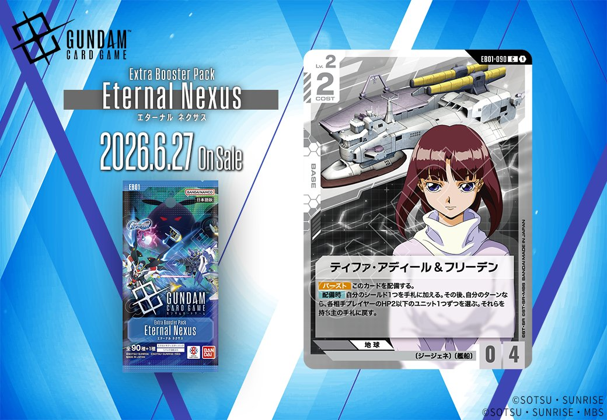
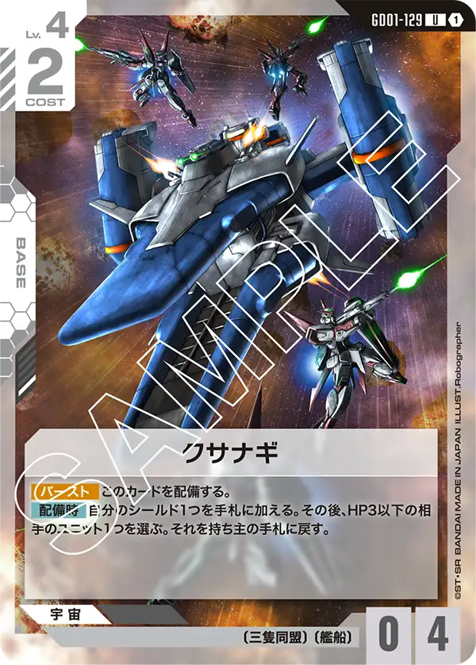

今回は「Generation Pulse」から《開発経路図の解放》、「Eternal Nexus」から《ティファ・アディール&フリーデン》の計2枚を紹介します。青のCOMMANDカードと白のBASEカードという異なるカードタイプの組み合わせで、それぞれ独自の戦術的役割を持つカードです。

開発経路図の解放 (ST10-014)
| 色 | 青 | タイプ | COMMAND |
| Lv | 1 | コスト | 2 |
| 特徴 | 〔ジージェネ〕 | ||
効果: 手札のこのカードをプレイするとき、手札の〔ジージェネ〕のユニットカード1枚を捨ててもよい。そうしたなら、これをLv.1とコストを2としてプレイする。 メイン 自分は2枚ドローする。
手札の〔ジージェネ〕ユニットを捨てることでコスト2でプレイできる2ドロー効果を持つコマンドカード。通常のドロー系コマンドと比較してコスト条件は厳しいが、〔ジージェネ〕デッキなら手札交換も兼ねた優秀なドローソースとして機能する。 Generation Pulseの新カードであるハロやルーナ・マナ&キャリー・ベースなど、同じ〔ジージェネ〕特徴を持つカードとの組み合わせで真価を発揮するだろう。


ティファ・アディール&フリーデン (EB01-090)
| 色 | 白 | タイプ | BASE |
| Lv | 2 | コスト | 2 |
| AP | 0 | HP | 4 |
| 特徴 | 〔ジージェネ〕、〔艦船〕 | ||
効果: 【バースト】このカードを配備する。【配備時】自分のシールド1つを手札に加える。その後、自分のターンなら、各相手プレイヤーのHP2以下のユニット1つずつを選ぶ。それらを持ち主の手札に戻す。
ティファ・アディール&フリーデンは、白色のBASEカードとして配備時にシールド回収とHP2以下のユニット除去を両立する優秀な効果を持つ。コスト2でHP4という堅牢さに加え、バースト効果により相手のターン中でも配備可能で、自分のターンなら各相手プレイヤーのHP2以下のユニット1つずつを手札に戻せるため、多人数戦でも強力な盤面コントロールが可能。 シールド回収によるリソース確保と小型ユニット除去を1枚でこなせる汎用性の高さが魅力で、白色デッキの防御的な戦略を支える1枚になりそう。
関連カード
-
 ハロ(EB01-017)NEW青系 — 同色・共通特徴: ジージェネ（新カード）
ハロ(EB01-017)NEW青系 — 同色・共通特徴: ジージェネ（新カード） -
 ルーナ・マナ&キャリー・ベース(ST10-016)NEW青系 — 同色・共通特徴: ジージェネ（新カード）
ルーナ・マナ&キャリー・ベース(ST10-016)NEW青系 — 同色・共通特徴: ジージェネ（新カード） -
 アムロ・レイ(ST01-010)青系デッキ内採用率59.3% (706デッキ)
アムロ・レイ(ST01-010)青系デッキ内採用率59.3% (706デッキ) -
 ガンダム(ST01-001)青系デッキ内採用率58.3% (694デッキ)
ガンダム(ST01-001)青系デッキ内採用率58.3% (694デッキ) -
 覚悟の表れ(GD01-100)青系デッキ内採用率49% (583デッキ)
覚悟の表れ(GD01-100)青系デッキ内採用率49% (583デッキ) -
アークエンジェル(ST04-015)白系デッキ内採用率4.6% (55デッキ)
-
 アーガマ(GD02-129)白系デッキ内採用率3.1% (37デッキ)
アーガマ(GD02-129)白系デッキ内採用率3.1% (37デッキ) -

クサナギ(GD01-129)白系デッキ内採用率0.7% (8デッキ) -
 ユウ・カジマ(EB01-072)NEW白系 — 同色・共通特徴: ジージェネ（新カード）
ユウ・カジマ(EB01-072)NEW白系 — 同色・共通特徴: ジージェネ（新カード） -
 ブルーディスティニー1号機(EX)(EB01-043)NEW白系 — 同色・共通特徴: ジージェネ（新カード）
ブルーディスティニー1号機(EX)(EB01-043)NEW白系 — 同色・共通特徴: ジージェネ（新カード）